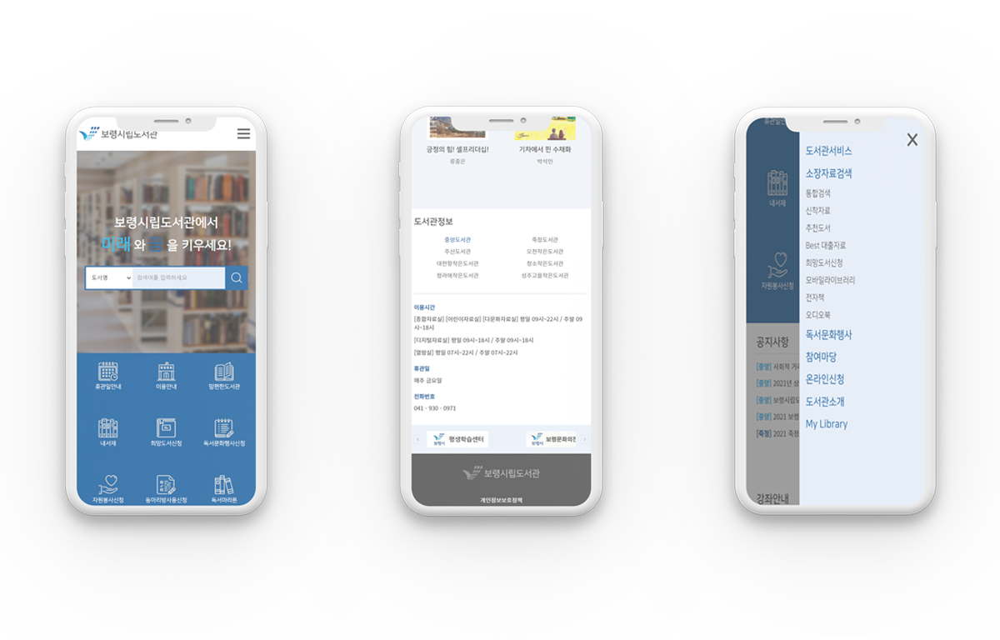
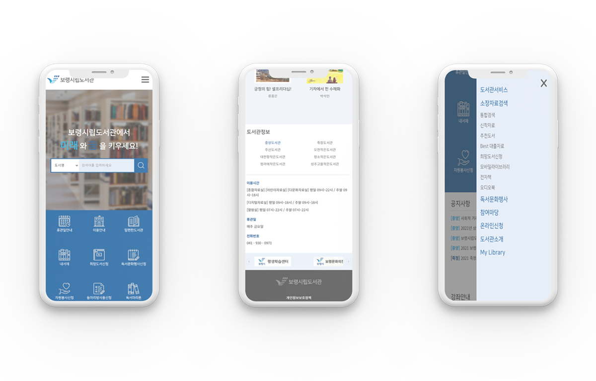

개인 포트폴리오용 제작
보령시립도서관 웹페이지
보령시립도서관 웹페이지 리뉴얼
- 반응형 웹
- 디자인 100% / 퍼블리싱 100%
- 제작기간 5일 (디자인 1일, 퍼블리싱 4일)
개인 포트폴리오용 제작
보령시립도서관 웹페이지 리뉴얼
공공도서관인 보령시립도서관 웹페이지를 리뉴얼 하였습니다.
국가종합전자조달시스템인 '나라장터' 홈페이지에서 주제를 선정하여 제작한 페이지입니다.
신착도서와 추천도서 섹션은 각 탭을 클릭하면 화면이 전환되도록 만들었습니다. 배너 부분은 slider 소스를 활용하여 움직이도록 하였습니다.
반응형 웹으로 제작하여 사용자의 다양한 디바이스와 브라우저 크기에 대응할 수 있도록 하였습니다.
 
